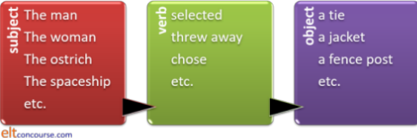
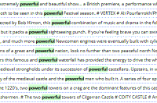

Collocation

There is an essential and simpler guide to collocation in the initial plus section of this site.
This is quite a long guide so here's a contents list. If this
area is new to you, however, you'd be well advised to read through
the guide in the order in which it is set out.
Clicking on -top- at the end of each section will
bring you back to this menu.
| Definitions | Choice and constraint | Grammatical vs. lexical collocation | Classification by strength |
| Classification by word class | Six types of lexical collocation | Semantic prosody | Teaching collocation |
 |
Definitions |
A common enough definition is from Lewis:
Collocations are those combinations of words which
occur naturally with greater than random frequency
Lewis, 2008: 25
This simple definition hides a good deal of complexity. We need to understand what is meant by
- combinations of words
- naturally
- greater than random
and we will tackle these one by one later.
Here are a few examples for you to get a feel for collocations. What goes in the gaps?
| torrential ______ | ______ carriage | high ______ |
| air-conditioning ______ | ______ and fro | towering ______ |
| flock of ______ | an open and ______ case | the black ______ of the family |
| significant ______ | gas ______ | ______ paper |
Some of these are almost entirely predictable because they are strong
collocations; some are much weaker collocations and far less
predictable.
It's a fair bet that you inserted rain or waterfall in
the first gap, to in the gap that goes with fro,
birds, sheep or goats in a flock,
shut for the case and sheep (again) for the
family.
The other gaps are almost entirely
unpredictable except to say that it is unlikely that you inserted
dwarf as the noun modified by high, boat after
air-conditioning and ditch as the noun for the
adjective towering. If, however, you assumed that it was
a non-finite verb form, it's fairly predictable that you inserted the
preposition over after it. It is unlikely, too, that you decided
on a sports carriage although horse-drawn is a popular
choice.
In the final row, it's a safe bet that you inserted a noun in the first
example (because the word significant only functions as an
adjective in English), a noun or verb in the second cell (because
gas only functions as a noun and often classifies other nouns like
cooker, fire, lamp, light etc.). What you inserted in the
final gap is unguessable because so many nouns, verbs and adjectives can
collocate meaningfully with paper.
In other words, your choices to fill the gaps in the phrases were more
or less constrained, with some items clearly excluded and others
allowed. Constraints
on and exclusions in language use is what collocation is about.
 |
Choices and constraints |
If you have followed the guide to lexical relationships, you will be aware of the meaning of syntagmatic rather than a paradigmatic relationships in language. Briefly:
- Syntagmatic relationships
- refer to syntax in a sentence. For example, in this
sentence:
The man selected a tie
we have a subject noun phrase, a verb and another noun object phrase.
The relationships between the three phrases are determined, in all languages, by the grammar of a well-formed sentence so, while we can replace a noun phrase with another and a verb phrase with another to get, for example:
The woman selected a tie
or
The man selected a jacket
or
The man threw away a tie
we cannot replace on a non like-for-like basis and have
*The woman the man a tie
or
*The man selected threw away
Syntagmatic relationships work horizontally along clauses. - Paradigmatic relationships
- work vertically and refer to the fact that The man, The
woman, selected, threw away and a tie all perform a
specific grammatical function and can be replaced ad infinitum
with any similarly functioning phrase. The resulting sentence
may be nonsense but it will be grammatically correct so we can have:
The ostrich selected a fencepost
The spaceship chose a tie
and any number of other perfectly grammatical sentences.
The summary is:

Each slot in a clause can be replaced by words and phrases in the same word class to make new clauses (some of which might make sense) ad infinitum. The boxes relate to items in a paradigmatic relationship with each other and the black arrows show the syntagmatic relationships.
Collocation concerns both types of relationships:
- Collocation is a syntagmatic phenomenon insofar as it concerns
which sorts of items are more or less likely to co-occur
horizontally in a clause. For example, it is more likely that
the verb select will co-occur with an animate subject so we
will not usually encounter:
The tree selected
The car selected
but any animate subject is possible so
The child selected
I selected
The committee selected
The horse selected
and so on are all imaginable. - Collocation is a paradigmatic phenomenon insofar as it is centrally concerned not with what is possible but with what is likely, conventional and non-random in terms of which items are likely to fill the slots.
In summary:
- Grammar
- works on an open-choice principle
. The only constraint is word / phrase class, i.e., the
paradigmatic relationships between elements performing the same
grammatical function (verbs, nouns, adverbs, determiners etc.). Whether a sentence is well-formed or not merely depends on the
ordering of the items which make up a clause.
We can look at any clause in any language and ask:
What substitutions can we make?
because the choice is virtually open ended. - Collocation
- is a powerful syntagmatic constraint on making
language because it is concerned not with free choice but with
limitations on meaning and what is appropriate and acceptable semantically.
I.e., the issue is one of closed choices and how wide
the choices are is determined by collocational strength.
We can look at a clause in this respect and ask:
Which substitutions can we make?
because the choice is now restricted.
Exclusion

Exclusion is a key concept within collocation.
Some words collocate so freely that almost no combination is excluded. For example, the determiner some will collocate with any plural count noun and any mass noun at all so there is almost no way to predict with which nouns it is most likely to co-occur. For the purposes of analysis, this lack of exclusivity means that it makes no sense to refer to the collocational characteristics of a word like some.
Other words are far less flexible and some almost completely
inflexible so, for example, although the adjective good is
promiscuous in the nouns which it can be used to describe it is not
fully so. We are unlikely to encounter, e.g.:
a good problem
a good drawback
etc. because the adjective is semantically constrained to exclude many
negative-connotation nouns. Not all, however, because:
a good thunderstorm
a good accident
etc.
are conceivable if ironic in most circumstances.
Other words are very exclusive and are severely constrained in terms
of co-occurrence. For example, the word pay collocates
quite frequently with a range of nouns (bills, invoices, the money,
attention, the price, dividends etc.)
However, the noun attention, which collocates with pay
in, e.g.:
Please pay more attention
has a much more constraining effect on the verbs of which it can be the
object and they are confined almost to pay and give.
What's more, none of the synonyms of pay and give can
be used with the noun attention and only heed appears
to be a synonym of attention which can also be the object of
pay, as in:
Please pay more heed
Furthermore, although the verb pay also has a range of near synonyms,
foot, settle, disburse, give, shell out etc., only some of these can
refer to the same noun:
pay / settle / foot the bill
pay / settle the invoice
pay / disburse / give / shell out the money
give / shell out his pocket money
are all acceptable but
*give / shell out / disburse the bill / the invoice
are not and we can only have:
foot the bill
and not
*foot the invoice
etc.
In our example, the verb pay and the noun attention collocate strongly in one direction (noun to verb), but the same is not true for collocations in the other direction (verb to noun) which are much less exclusive. There is, in the jargon, asymmetric reciprocity which is explained a little more fully later.
 |
Grammatical and Lexical collocation |
Most authorities will agree that there are two forms of collocation to consider: grammatical and lexical.
- Grammatical collocation
- refers to what is analysed elsewhere on this site as
colligation, to which there is a guide linked in the list at the
end.
The principle is that some words are, as it were, primed grammatically to appear in certain grammatical structures.
For example:
The verb differentiate is grammatically primed to take the preposition between
What's the difference between the houses?
The adjective interested is grammatically primed for the preposition in (plus an -ing form in the case of verb complementation)
She's not very interested in hockey
I'm interested in seeing the film
The noun pleasure is grammatically primed to take a to-infinitive
It's a pleasure to see you
The verb promise is grammatically primed to take either a to-infinitive or a that clause
I promised to help
I promised that I would help
The noun accident is grammatically primed to be preceded by the preposition by
It was done by accident
and so on.
Some authors will place all prepositional, phrasal and phrasal-prepositional verbs into this category.
This form of collocation will not be further analysed here. For more, see the guides to colligation and multi-word verbs linked in the list of related guides at the end. - Lexical collocation
- is a far more equal form of partnership in which both words
contribute to the meaning of the phrase.
For example:
Noun + Verb
The bomb exploded
Verb + Noun
She lost patience
Adjective + noun
a stinging insect
This is the form of collocation which is considered in this guide.
A simple way to remember this difference is to see that
combinations which include function words are grammatical and those
between lexical words are lexical.
In English, the lexical words are open-class items (i.e., ones to
which new additions are possible if not frequent) and involve nouns,
adjectives, adverbs and verbs.
Functional (or structural words) are closed-class items (i.e. ones
to which new additions are very rare if not impossible) and involve
prepositions, determiners, conjunctions and pronouns.
Therefore:
Any combination of two or more lexical
words is lexical collocation
Any combination which includes functional words is grammatical
collocation
In this site, the latter is referred to as colligation and analysed elsewhere (see the link below).
 |
Classification by strength |
Naturally, some collocations are stronger than others. The nature of collocation can be illustrated like this:

There is probably no principled way in which we can always distinguish, e.g., a strong collocation from an idiom or a binomial although it is easy enough to identify examples of one or the other.
- Idioms
These are pretty much fixed and unalterable expressions in a language. For example, someone can be described as
a one-man band
a jack of all trades
the life and soul of the party
etc.
Things can be talked about as
the odd one out
a blessing in disguise
chicken feed
a flash in the pan
and so on.
There are literally thousands of such expressions in every language which people can deploy almost as if they were single words, saving thinking time and maintaining fluency.
There is a guide to idiomaticity, linked at the end, where more detail is to be had.
The important thing about this kind of collocation is its noncompositionality, i.e., the whole phrase has to be understood as a single item and cannot be broken down into its constituent parts to get at the meaning. - Binomials and invariable collocations
Binomials are a special sort of idiom made up of two elements which always appear in the same order. If they are nouns, they are often used with a singular verb form because they represent a single concept (we say, e.g., supply and demand is the issue not are the issue).
Binomials often contain words found in no other contexts. Examples are:
to and fro
thunder and lightning
spic and span
neither here nor there
in and out
cheap and nasty
etc.
There are also some trinomials in English such as
left, right and centre
bell, book and candle
cool, calm and collected
hook, line and sinker
etc.
A small subset in this category comprises invariable collocations in which only one combination is usually possible in only one order such as:
from top to bottom
back to front
duck a question
stage a play
This kind of collocation is sometimes referred to as Siamese twins. The elements are, in other words, both inseparable and unalterable in the way that other, weaker collocations are not.
For example:
His speech was short and sweet
It was something I could not aid and abet
Foreign and domestic policies are being reconsidered
It's a rough and ready rule
In the legal profession, there are many more of these and they include, for example:
heirs and successors
assault and battery
expressed or implied
fit and proper
and many others. - Strong collocations
These can almost always be predicted by native speakers of a language (or at least have very few alternatives). Typically they allow a choice of words but at only one point in the phrase or clause. For example, if you are asked to fill the gap in the following, your answer is probably quite predictable.
Please __________ free to ask any questions.
Some of these collocations allow a choice at two points in the clause or phrase. For example:
swat / squash a fly / wasp / bug
cook / prepare / make a meal / dinner / food / some grub
etc.
Other strong collocations are adjective-noun combinations. The number of possible adjectives for rain is large but not infinite (heavy, light, drizzly, hard, thin etc.) and exclude adjectives such as strong, powerful etc.
Some authors will place all phrasal, prepositional and phrasal-prepositional verbs in the category of grammatical collocation. On this site, they are considered separately. - Delexicalised verbs
When verbs are involved in these invariable collocations they are often describable as delexicalised because they take their meaning from the noun with which they collocate rather than having an explicit meaning in themselves. Other examples of delexicalised verbs (or verbs which can be described as such in certain environments) are:
do | have | get | go | make | put | set | take
For example:
do the washing up
have a shower
get a letter
go by car
make a cake
make the beds
put a question
set a trap
take / make a decision
in all of which it is the noun which contributes more to meaning than the verb. These general-purpose verbs combine with certain nouns only to produce memorable lexical chunks which native and skilful non-native speakers deploy almost as single lexemes, although adverbials and adjectives may be inserted and tense and voice changed to suit the speaker / writer's intentions. For example:
make (mistakes, haste, a fuss, arrangements, certain, discoveries, fun of, a journeys, peace, war, a mess, money, friends)
do (homework, justice to, an injury, a service, a favour, wrong, the shopping, damage)
take (advantage, notice, pains, root, an offer, an interest, place, offence)
pay (attention, a compliment, our respects)
give (explanations, thanks, consideration, one's word, promises)
The point at which strong collocations like these become so predictable and fixed as to qualify as idioms rather than collocations is not at all easy to discern. - Prime verbs
An allied concept is that of what are known as a language's prime verbs. In English, these are
be | bring | come | do | get | give | go | keep | make | put | take
Besides the delexicalised nature of many of these verbs in certain collocations, they are also the verbs which are basic to most idiomatic language and which often take the place of more formal or synthetic verbs. So, for example:
There are, in fact, very few verbal concepts in English which cannot be rendered less formally and more simply by using one of the prime verbs in combinations with adverbials.We can render ... ... as this with a prime verb He appeared suddenly He was suddenly there They have raised four children They have brought up four children He attended the meeting He came to the meeting I executed her instructions I did as she told me I arrived at the hotel late I got to the hotel late I handed in my essay I gave my essay in He travelled to New York He went to New York Please retain the receipt Please keep the receipt I prepared dinner I made dinner She garaged the car She put the car in the garage I caught the train I took the train - Textual collocation
This refers to the tendency for sets of words to occur together in a text on a particular topic. A text about families will probably include, e.g.:
home, children, parents, arguments
and so on but one about smoking would have
cigarette, health, addictive, nicotine, secondary
etc.
If you want to know more about idioms and binomials, see
the guide to idiomaticity on this site, linked at the end.
If you want to know more about delexicalisation, see the guide to the
lexical approach also linked at the end.
 |
Lexical collocation: classification by word class |
The citation from Lewes included the phrase: combinations of words and it is time to address what sorts of combinations we can focus on for analysis.
Lexical collocations can be classified by word class. This is
often a useful way to limit one's focus in the classroom and help
learners to identify collocations of a particular sort so they are, for
example, only trying to notice particular combinations of words, not all
combinations.
At lower levels, the most important combinations are probably
adjective + noun and
verb + noun as these are very frequent
and frequently variable across languages.
| adjective + noun: | high wall, tall person, flat landscape, painful toothache etc. but not painful taste or tall road |
| verb + noun: | close a shop / door etc. but turn off a light |
| adverb + adjective: | ecstatically happy, deeply depressed but not seriously lighthearted or medicinally interested |
| noun + noun: | flock of sheep, herd of goats but not pride of elephants or ingot of chocolate |
| verb + adverb: | scream loudly, tiptoe noiselessly but not scream swiftly or tiptoe violently |
| verb + prepositional phrase: | swing to and fro, descend into misery, explode with anger but not handle with indifference or explode with tears |
You can test yourself to make sure you can recognise stronger and weaker collocation of these six types by clicking here.
Many combinations are excluded for semantic reasons so, for example,
we cannot have:
*short giant
*distinguish similarity
*deafeningly quiet
*window wood
*clarify obscurely
*ascend down the valley
and none of these should cause any difficulty because semantic exclusion
of this sort is common across all languages (and common sense).
Before we can get on to analysing the six types of lexical collocations identified above, we need to consider some key concepts and return to our definition of collocation.
Reciprocity |
|
| give and take |
The relationships between collocating lexemes is often unequal.
There is, in other words, asymmetrical reciprocity. For example, the noun interest
collocates with a wide range of adjectives such as:
great interest
keen interest
obvious interest
sudden interest
academic interest
personal interest
public interest
special interest
romantic interest
and hundreds of other adjectives including:
vested interest
The adjective vested, however, only collocates with the noun
interest
and has no other combination in general English, although in legal and
economic registers we may encounter the technical uses of the terms
vested property and vested authority.
(We are leaving aside the term vested to mean wearing a
vest, by the way.)
Once we have used the term vested, we have almost no choice at all but
to follow it with the noun interest. However, when we use
the noun interest, we are not constrained in anything like the
same way in our selection of an appropriate adjective to modify it.
That is what is meant by asymmetrical reciprocity: collocation does not
work equally in both directions.
The key is to identify what is sometimes referred to as the
pivotal element in the collocation, i.e., the element which is
the determining factor limiting the range of possibilities for the other
element.
Here are some more examples:
The number of nouns which can combine with the adjective heavy
is huge and will include:
weight, car, man, breathing, metal, plate, computer,
stone, table, brick, key, ashtray
and almost every other noun which is not in itself associated with
something light, such as feather or bubble. The
number of possible nouns runs into many thousands.
However, if we take any of these nouns, it is easy to see that the
number of adjectives which can be used to modify them is much smaller
than the number of nouns which can be modified by heavy.
For example, the noun rain can be modified by heavy
but it is clear that the number of other adjectives we can use with this
noun is limited and it is almost possible to produce a complete list
confined to:
| abundant acid blessed ceaseless chill chilly cold constant |
continual continuous cool copious driving drizzly endless excessive |
fine frequent gentle grey hard icy incessant intermittent |
light misty moderate occasional perpetual persistent plentiful refreshing |
relentless soft steady sudden thin torrential tropical warm |
You may be able to think of a few others but the list is clearly not
anything like as long as the list of nouns which can be described as
heavy. The list of possible adjectives would be much shorter
in cases such as computer, ashtray,
breathing etc.
As we saw above, the adjective torrential can only be
used with a small number of nouns and it is possible to come up with a
list such as:
| cloudburst current deluge |
downpour flood monsoon |
rain rainstorm rapids |
river shower storm |
stream thunderstorm waterfall |
and it is quite possible that not all native speakers of English would accept all those as natural combinations. Given that there are probably around 70,000 nouns in English, this means that the adjective torrential collocates with only 0.02% of them. In other words, if you try to use the word randomly to modify any noun you come across, you have a 99.98% chance of being wrong.
Other sorts of collocation work the same way so, for example, the list of nouns which can be the object of the verb make is very long but the list of verbs which can have bed as the object is very much shorter.
There is a classroom implication that we need to focus on
collocations which are limited, not on those which are so numerous that
they can't be taught.
Hence, the focus on exclusion at
the beginning of this guide.
 |
Separation |
| give and take |
Collocation may be described as the study of how lexemes
conventionally co-occur (are
combinations in Lewes's definition) but that does not necessarily mean that they
must be juxtaposed. For example, we may have:
the dense fog
in which the words are juxtaposed, or
the fog was / became / looked dense
in which the collocating noun and adjective are separated only by
the copulas be, become or look, but we could also have:
the fog which rolled down the mountain that morning
grew increasingly dense
in which the collocates are separated by nine other words.
This is clearly a teaching issue because learners may not be able easily to spot the collocating items in the
following unless they are highlighted in some way, as they are here
with one example of each of the six main types of lexical
collocation:
- The landscape over which they were travelling that morning was featureless
- My hotel bill is the first thing that I need to settle
- She was deeply and quite obviously, to me upset
- The chocolate looked absolutely delicious so I bought three bars
- He strongly and persistently, throughout the bad-tempered meeting, argued his point
- They fell irretrievably and quite hopelessly into debt
 |
Randomness |
| equal probability |
The citation from Lewes at the beginning included the expression: with greater than random frequency.
Language, however, is a non-random phenomenon. It is not the case that one language lexeme may be followed by any other with absolutely equal, i.e., random, probability because language is a rule-based system.
The Oxford English Dictionaries website states that:
The Second Edition of the 20-volume Oxford English
Dictionary contains full entries for 171,476 words in current use ...
Over half of these words are nouns, about a quarter adjectives, and
about a seventh verbs; the rest is made up of exclamations,
conjunctions, prepositions, suffixes etc. And these figures don't take
account of entries with senses for different word classes (such as noun
and adjective).
https://en.oxforddictionaries.com/explore/how-many-words-are-there-in-the-english-language/
If we assume, therefore, that we have around 85,000 nouns which could
conceivably be the subjects of around 25,000 verbs, the number of
possible combinations of noun + verb is well over 2 billion. The
number of possible adjective + noun combinations would be over 3.5
billion.
This is clearly not a tenable conclusion and most combinations of words
are, in fact, excluded for one of two main reasons.
For example, if a clause begins:
Because she ...
it cannot be completed with just any item in the language because the
choices are constrained by the grammar and the meaning systems.
- Grammar
because the word cannot, for example, be followed by opening, difficult, so, in the garden, familiar with, all, were or house because there are word-class and other structural constraints which follow from the rules of English grammar. In fact, because neither a noun nor an adjective can come next, something like 75% of the words in English are already excluded.
The linguistic systems of the language will mean, therefore, that only a verb phrase, with or without an adverbial, can follow our example. That still leaves around 25,000 verbs in the language which could conceivably come next.
This is not, strictly speaking, an example of grammatical collocation (see above for that) but an artefact of the language's grammar. - Meaning
because language is not a random collection of significations but utilised for the purposes of communication, so the phrase, Because she ..., cannot rationally be followed by:
... doesn't understand, I will ask her to understand
... is alone, she is with people
because no communication properly results (despite being grammatically well formed).
In addition, certain verbs which only take inanimate or animal subjects such as rain, photosynthesize, calve, low, erode, inundate, overflow, pitter-patter, blare, glint, flame, swish, thud and so on are also excluded. We cannot have, therefore:
Because she flamed ...
Because she eroded the cliff ...
etc.
To take a non-verb example, meaning will require that the adjectives influential, tiny, glittering, pollinated etc. are unlikely to occur collocated with the noun elephant simply because the ideas of an influential, tiny, glittering or pollinating elephant are not ones that makes sense to (most) users of a language.
Equally, the subject noun an elephant is unlikely to occur with verbs such as explain, buzz, explode, drone, meditate, apologise and so on because that is not what elephants do (presumably).
The number of ways to finish the sentence which begins:
Because the elephant ...
is severely limited by the nature of elephants. Grammatically, of course, most of the 25,000 English verbs can follow but only a very small percentage of that number will make any sense.
What is meant by non-random collocation is, therefore, not a matter of
random vs. systematic phenomena, it is a matter of comparative
degrees of probability. It is
an analogue, not a digital phenomenon. Degrees of probability are
determined grammatically and semantically.
There are, in other words, regularities in the collocational systems of
a language, any language, which reduce
randomness but the system is not random to begin with.
 |
Register |
| mapping the data |
Collocational aspects of many words vary according to the context
(i.e., field of discourse) in which they occur. For example,
within a business context a verb such as grow might
collocate with market or business as in:
We need to grow the market
or
They grew the business year on year
but in non-context-specific fields, the verb usually means
cultivate as in, e.g.:
I grow vegetables
or intransitively to mean get larger as in
The children are growing quickly
All specialist fields (registers) have their own internal jargon (or
specific terminology to be more polite) so, whereas a teacher of
language might refer to:
intermediate level,
a legislator might refer to
creating a level playing field,
a builder might refer to
foundation level
and a sports commentator might refer to
levelling the score
The example above with the verb map is clearly set in an IT
context but a geographer would probably use the verb quite
differently and with different noun objects such as:
map the transport links.
These considerations do not solely apply to verbs, although verb-noun collocations are good examples of the working of register influences:
- Adjectives such as strategic will be used differently,
and collocate differently in military, chess-playing and economic
registers
strategic weapons
strategic moves
strategic industries
respectively, for example.
(See also the way vested collocates across registers, noted above.) - Adverbs such as healthily will be used differently and
be differently collocated by nutritionists and economists
eat healthily
and
profit healthily
for example. - Nouns such as turbulence will be used differently and
be differently collocated by social commentators, scientists and
marital counsellors
street turbulence
turbulence of an airflow
turbulence in a relationship
for example.
In management-speak, one might encounter the term payroll orphans (workers who have been fired) but that combination of nouns is unlikely to appear in any other register.
Context, as usual in language teaching, is crucial.
 |
Style |
| dancing, tripping or boogying? |
A concept closely allied to register is style (so closely, in
fact that the terms are routinely confused).
Style is influential in the selection of collocating words because
although:
settle the bill
pay the bill
foot the bill
are all example of phrasal synonymy, as we have seen, they are stylistically variable
from the formal to the neutral and the informal, respectively.
All the sorts of lexical combinations which are identified above are subject to stylistic variations so we may have, for example:
| Formal | Neutral | Informal |
| admirable idea | excellent idea | super idea |
| accede to a suggestion | agree to a suggestion | go along with a suggestion |
| supremely confident | extremely confident | incredibly confident |
| pod of whales | group of whales | bunch of whales |
| speak loquaciously | speak at length | speak long-windedly |
| articulate | say | put into words |
Informally, verb plus prepositional phrase collocations are
frequently alternatives to more formal verbs. It is also averred
that verb + adverb combinations are less formal than single-word
parallels (at least when an alternative exists). For example:
go to the next stage
is less formal than
proceed
and
throw away
is less formal than
discard
For more, see the guide to style and register linked in the list of related guides at the end.
 |
Naturalness |
| How natural is it? |
The citation from Lewes also included the phrase: combinations of words which occur naturally. The term naturally here needs a little investigation because it is gradable concept not an on-off attribute of anything. We can define natural in many ways but the essence is that it is not contrived or contrary to some kind of usual, ordinary or expected law.
Naturally(!), among speakers of any language, opinions will vary and
what one speaker finds a perfectly natural combination of words may
appear to another as false, poorly formed or clumsy at best, plain wrong
at worst.
For example, would you be happy to accept all the following as being
'natural'?
| an influential
book a powerful book a dominant book a prominent book a forceful book |
peel the carrot pare the carrot skin the carrot clip the carrot trim the carrot |
eat soundly eat healthily eat beneficially eat nutritiously eat wholesomely |
More to the point, do you think everyone who speaks English as a first language would agree?
It is, in fact, especially with weak- or medium-strength
collocations, very difficult to decide what is and is not natural.
However, to help us these days, we have access via corpus
research to very large samples of
natural language data from which we can see the patterns that are
frequent, those that are unusual and those that do not occur or are
vanishingly rare.
However, frequency is not necessarily a measure of naturalness because
some combinations of words can be infrequent but natural because they
are confined to certain unusual registers and/or contexts.
For example, the terms:
compose language
creep soundlessly
careful operation
heritage phenomena
downsized workforce
matrix management
are, according to some corpus research, really quite rare but the fact
that they do occur with more much than random frequency implies that
they are natural enough and few speakers of the language would wince if
they read or heard them in particular contexts.
Unfortunately, teachers are rarely able to access corpus research
findings in real time in the classroom (although they can when planning
what to teach) so we are thrown back on our intuitions about language
which may or may not be typical of the speech community we represent.
It is rare, in any case, for false collocation to result in incomprehensibility and all these examples of
probably false collocations are clear in terms
of the speaker / writer's intentions:
She was deeply overjoyed
They opted for their Member of the Senate
He was expelled from the army
He has a group of fish in his pond
The wind was very heavy
She rode a new vehicle to work
I need to get a new square of glass put in the window
He dived profoundly in the river
She spoke with happiness
So, we should not become too fixated on the issue of natural
collocations, especially at lower levels where communication of an idea
will often be more important than natural-sounding language.
The point is made below, however, that learners expect some certainty
in terms of what they are told about language and telling them that, for
example:
Well, yes 'strong rain' and 'boiling sunshine' are
possible, I guess, but I wouldn't say it
is rarely reassuring or helpful.
The point is made below, too, that many multi-purpose nouns, often
hypernyms, do not form very natural-sounding collocations so, for
example:
a box of cigarettes
a group of furniture
a container of paint
all sound slightly unnatural but, failing mastery of the terms
carton, suite and pot, they will communicate effectively.
See below for more on noun + noun collocations of this sort.
Equally, mastery of multi-purpose verb phrases such as begin to do /
play will often stand learners in good stead if they do not know
how to say, e.g.:
go in for golf
or
take up knitting
etc.
 |
Analysing the six types of lexical collocation |
Some forms of lexical collocation are more frequent and more
frequently troublesome for learners but they are all important (with the
possible exception of verb plus prepositional phrases) to cover if our
learners' ambition to sound natural (whatever that means) in English is to be
fulfilled. Adjective + noun and verb + noun have already been
identified as important areas.
We can now look in a little more detail at these six types one by one.
 |
Adjective + noun |
| warm rain |
A range of adjectives are so promiscuous that almost no exclusion
is possible and these include:
good, nice, pleasant, lovely
bad, unpleasant, ugly, difficult
and so on.
These adjectives will not collocate with
all nouns, of course, because
certain combinations are semantically virtually impossible, such as:
unpleasant enjoyment
pleasant illness
difficult weather
etc.
However, the range of nouns that they will collocate with is so
large as to be impossible to list exhaustively. They form, in
other words, such weak collocations that they do not commend
themselves as a teaching target.
Other adjectives (most of them) form medium-strength collocations and
can be the target of our teaching and these include:
heavy, strong, weighty, dense, thick, high, tall,
substantial, fat
light, bright, elegant, easy, simple, gentle, cheerful, happy,
thin
and so on. The list can be extended very considerably but this is
a guide, not a dictionary or thesaurus.
With these adjectives, it is possible to extract certain patterns which
can act as rules of thumb for learners to use. For example:
- heavy is usually used with materials and physical objects so we have:
- a heavy car
heavy rain
heavy metal
a heavy person
etc. but the near synonym, weighty, is often reserved for abstract concepts so we may have
a weighty problem
a weighty issue
a weighty influence
a weighty question
etc. in which the adjective heavy is not allowable. - thick and fat are near synonyms in many cases so we can have, e.g.:
- a fat book
a thick book
a fat pipe
a thick pipe
and so on, but this is not always evident because we do not find:
*a thick cow
preferring
a fat cow
or
*a fat cloud
preferring
a thick cloud
or
fat fog
preferring
thick fog
and so on.
The point here is not that certain combinations are wholly impossible but that certain combinations are preferable, more frequent and more natural. - It may be argued that cheerful and happy are also near synonyms but the first applies almost solely to people and the second is more flexible so we can have:
- a cheerful / happy party
a cheerful / happy person
a cheerful / happy face
etc. but we do not usually allow:
*a cheerful accident
*a cheerful meeting
*a cheerful outcome
*a cheerful coincidence
preferring happy in all cases. - easy and simple are synonyms in many cases so we can allow:
- a simple / easy question
a simple / easy problem
a simple / easy sum
but the two words do not always mean not difficult because simple often means not complicated so we find:
a simple machine
not
*an easy machine
and
a simple sketch
not
*an easy sketch
and so on. - strong and powerful are obvious synonyms with different collocations characteristics so we can have, for example:
- strong coffee
strong medicine
strong arguments
strong suggestions
strong foundations
strong tape
and thousands more. We can also have:
powerful medicine
and
powerful arguments
However, the adjective powerful is more constrained and normally reserved to mean producing power so we allow:
powerful engine
powerful muscles
powerful wind
powerful leader
powerful wave
powerful country
powerful man
etc. but when the sense is of a static object, we do not allow powerful as an adjective so, e.g.:
*powerful foundations
*powerful rope
*powerful bolt
*powerful dam
etc. are all unavailable and, conversely:
*strong engine
*strong gun
*strong kick
*strong program
are also unavailable.
Some adjectives form very strong collocations as we saw with the
example of vested interest above. Other, less extreme,
examples include:
torrential rain
violent crime
glittering career
spoken language / word
sunken ship / boat
superhuman strength / efforts / feat
drifting snow
etc.
attributive and predicative adjective use
Most adjectives can be used attributively and predicatively.
In the former case, the collocation tends to be stronger and more
obvious. For example:
There were some anxious parents outside the
school
vs.:
The parents outside the school were anxious
or
She made a rapid rise to the top of the business
vs.:
Her rise to the top of the business was rapid.
This is even more the case when the adjective in question is
participial. In the latter case, the word is likely to be
interpreted as a verbal use rather than purely adjectival. For
example:
I walked in the freezing rain and wind
vs.:
The rain and wind I walked in were freezing
or
The written word was more memorable
vs.:
The memorable word was written
classifier vs. epithet
Certain adjectives take on enhanced collocational strength when
used as classifiers (determining the type of noun) or epithets
(describing the noun). For example:
She wrote
a short book
uses short as an epithet to describe the
book, and is not a particularly strong collocation, but
She wrote a short story
is used to classify the kind of story, is not, in
this sense, gradable and is a much stronger collocation, verging on
a compound noun.
Compare, too:
He worked in one of the compact offices
upstairs
with
He bought a compact disc
 |
Verb + noun |
| shut the gate |
Many verbs have no particular collocational characteristics but do
exhibit semantic exclusion by their nature. For example, because of
the meanings of the verbs we do not allow:
cut the sky
envelop the letter
decide the similarity
identify the weather
and thousands of other combinations which simply do not make sense (in
any language).
One obvious distinction is, non-poetically and non-metaphorically, we
restrict a range of verbs such as decide, oppose, prefer etc.
to animate, often human, subjects and others, such as flicker,
resonate, ring, tick, slam, snap, burn etc. to inanimate subjects.
Metaphorically, we can use something like:
She slammed out the door, her patience having finally snapped
but the power of such items rests in ignoring not adhering to the normal
collocational characteristics of the verbs.
Some verbs are only used in English with a certain set of nouns and some nouns require a reciprocally restricted range of verbs of which they can be the object. For example:
- The verbs close, shut, block, switch off, turn off etc. mean more or less the same thing but, in English, collocate differently. We:
- close or shut doors, lids,
roads, taps, programs and shops
turn or switch off lights, radios, computers and taps
block gaps, views and roads
and there is no obvious reason for this as other languages will translate the phrases differently. The antonyms of these verbs (open, switch on, turn on) work similarly.
Style plays a role here because shut and block are often less formal than close. as can be seen from signs, which are normally in more formal, frozen style so we would get:
Please keep this door closed
rather than
Please keep this door shut
and
ROAD CLOSED AHEAD
rather than
ROAD BLOCKED AHEAD - Nouns also determine the verbs of which they may be objects so, for example, we:
- break and keep promises
catch fire, colds, sight of and diseases
earn gratitude and a living
give promises, consideration, notice, thanks and words
hold meetings
keep secrets
lend a hand
lose confidence and touch
pay compliments, respects, attention
play tricks
run risks and businesses
set examples and sails
strike matches
take an interest, pains, offence, root and steps
throw parties and fits
etc. and in none of these cases is it possible to insert more than a very limited range of other verbs, if it is possible at all because the noun is the dominant item. - Some nouns are only (or almost only) connected with certain behaviours, for example:
- the door / shutter / window / lid slammed
the goats / sheep bleated
the jet / lion roared
the dog barked
the horse reared
the train / lorry / thunder rumbled
the donkey brayed
the bells pealed
the mud squelched
and hundreds more.
Even in those cases where more than one noun naturally collocates with any verb, the list of possible ones will be severely limited. - Inanimate vs. animate subjects
- As well as determining the sorts of object to which a verb can
apply collocational factors play a role in determining verbs'
subjects. For example, verbs which imply or suggest some kind
of thought process or deliberate action are usually confined to
collocations with human or higher animal subjects so we will find:
Mary considered braking
The cat watched the bird
but not
*The car considered braking
or
*The keyboard leapt off the desk
and the same is true for hundreds of verbs which imply deliberate behaviour rather than a simple material process.
However, we sometimes employ what is called pathetic fallacy for effect so we might encounter:
The car decided not to start
or
The photocopier took the opportunity to break down.
This is, naturally, logical nonsense but that's often the way things appear.
An associated issue is that English is rather untidy in assigning subjects to verbs so we allow:
The tap dripped
The kettle boiled
etc. when other languages will be more logical and refer to the fact that:
The water dripped
or
The water boiled
Ergative uses of some verbs, in which the ostensible grammatical subject is semantically the object of the verb, also seem to break the animate-inanimate rule of thumb so we allow, e.g.:
The book sold well
The door opened
The toast burnt
and so on which are either not allowable or will demand a special verb form in other languages. - Delexicalised verbs
- have been covered above and in these cases it is the noun which
is dominant in providing meaning and in the selection of the
appropriate verb. In other words, inserting verbs before these
nouns is generally a language-specific phenomenon determined by the
meaning of the noun and in some cases only one or two possibilities
exist:
_______ the beds
_______ homework
_______ a nap
_______ an alarm clock
_______ a train / bus etc. to work
_______ lunch
and so on.
 |
Adverb + adjective |
| deeply depressed |
Here, too, the semantic properties of the items will exclude
certain combinations in all languages so we can't allow:
*ecstatically miserable
*miserably happy
and so on because such expressions are internally contradictory or
oxymoronic. With adverbs, then, we need to match meaning
reciprocally so we do allow:
ecstatically happy
miserably depressed
genuinely honest
openly relieved
etc. because the meanings of the two elements are complementary.
When the adjective from which an adverb is derived and the following
adjective are too close in meaning, however, we cannot combine the
terms so we don't allow:
*sadly unhappy
*cheerfully happy
*solely alone
etc.
The simple rule is that in order to form an acceptable collocation,
the adverb and the adverb must contribute separately to the meaning
of the phrase, not just be repetitious.
However, intensifying adverbs are another matter. They come in three forms and their meaning can usually be summarised as very. How they collocate is often a question of gradability.
- Amplifiers increase the strength of the adjective and operate
differently with gradable and non-gradable adjectives.
- With gradable adjectives the adverbs may indicate the
extreme of the scale (up or down) so we will get, e.g.:
extremely likely
highly preferable
insufferably hot
slightly warm
marginally preferable
very interesting
rather ugly
and so on. - With non-gradable, on-off adjectives, or adjectives which
already represent the extreme of a scale, adverbs simple enhance the
meaning so we may have, e.g.:
hopelessly addicted
deeply mistaken
wholly unique
perfectly complete
totally wrong
wholly ecstatic
perfectly atrocious
etc.
- With gradable adjectives the adverbs may indicate the
extreme of the scale (up or down) so we will get, e.g.:
The two sorts of amplifiers cannot be used
interchangeably. Those reserved for gradable adjectives such as
extremely, enormously, particularly, insufferably, noticeably
etc. do not work with non-gradable or extreme adjectives so we do not find:
*enormously complete
*particularly dead
*noticeably perfect
*slightly atrocious
*very detestable
etc. and we cannot use those amplifiers which work for
non-gradable senses with gradable adjectives so, e.g.:
*wholly cold
*completely hot
*highly tall
*perfectly old
*indescribably nice
*totally lovely
are all disallowed.
- Emphasisers work to express the speaker / writer's feelings and
will collocate very widely so we can have, e.g.:
plainly / obviously / clearly / doubtlessly + right / wrong / good / bad / pleasant / unpleasant
and almost any other adjective so combinations such as
definitely good
obviously difficult
clearly enjoyable
and so on are all allowed.
Because the adverb is acting to express the speaker / writer's view, these items do not take their collocational characteristics from the adjectives. In fact, the lack of any form of reciprocity leads us to believe that they are not collocational phenomena at all. - Downtoners can do three things but collocate differently
depending on what they are doing.
- Compromisers reduce the speaker / writer's sense of
certainty, e.g.:
quite interesting
sort of helpful
etc.
Again, because these express the speaker / writer's position collocation, if it can be called that at all, can occur with almost any adjective. - Minimisers downplay the strength of an adjective so
collocate most naturally with gradable items as in, e.g.:
slightly interesting
probably important
etc. and not
*slightly perfect
*more or less adult
etc. - Approximators serve to suggest that something is almost but
not wholly the case so they collocate most naturally with
non-gradable adjectives as in, e.g.:
almost unique
virtually perfect
etc. but not with gradable concepts such as:
*almost hot
*virtually chilly
*nearly old
- Compromisers reduce the speaker / writer's sense of
certainty, e.g.:
Noun + noun |
|
| candle light |
Noun + noun collocations occur preponderantly in four forms:
- Compounds or potential compounds
Where the line is drawn between strongly collocating nouns and true compound nouns is not clear cut. For example, we can have weak collocations such as:
loudspeaker switch
and there are numerous other nouns which will collocate with either element:
loudspeaker positions
loudspeaker cable
loudspeaker controls
light switch
light dimmer
light controls
etc.
However, other very strong collocations are, or may become, compound nouns rather than being obviously the subject of collocation. For example:
light + bulb → light-bulb
lamp + shade → lampshade
dish + washer → dishwasher
A simple but slightly unreliable test of whether a combination represents a compound or simply a medium or strong collocation is to pronounce the pairs. Compounds are usually stressed on the first item.
For more on compounding, see the guide, linked in the list at the end. - Nouns for groups which many call collective nouns although on
this site there is a difference which we will observe here.
- Collective nouns
Collective nouns proper are those which represent a collection of entities and to which it is not necessary to add the of-phrase so we do not, for example, often see:
an army of soldiers
a family of relations
a congregation of worshippers
the cavalry of horse riders
a jury of jurywomen
and so on because the collective noun contains the concept of what makes it up. - Assemblages
are nouns to represent the whole made up of its parts and some collocate very strongly with certain things or people. There are lots of these and many of them, especially those for the animal world, are made up or vanishingly rare. Common ones are:
flock of sheep / goats / birds
litter of kittens / puppies
pack of dogs / wolves / cards
shoal of fish
squad of soldiers
swarm of bees
a gang of criminals
and so on. The number of nouns which collocate in this way is limited and teachable, unless one wants to get bogged down with a murder of crows, an exultation of larks, a bank of monitors, choir of angels, nest of vipers and a murmuration of starlings, of course. A hunt on the web for collective nouns will provide long, useless lists and many will not actually be true collective nouns.
In terms of colligation or grammatical collocation is it worth observing that the both assemblage and collective nouns proper are grammatically singular but often collocate with a plural verb form. We can have, therefore:
the squad of players is here
the squad of players are here
the jury have reached a verdict
the jury has reached a verdict
The use of the plural is either a form of proximity concord (in which the influence of the second plural noun disposes the speaker to use a plural form of the verb) or notional concord (in which the speaker / writer perceives the assembly to be made up of its individuals because they are known).
In most languages and many varieties of English, including AmE, the singular form is the invariable choice.
- Collective nouns
- Partitives
There is a dedicated guide to partitives on this site, linked from the list of related guides at the end. It is enough here to exemplify the collocational aspects of these words by this table, taken from that guide.
piece of
bit of
item of
touch ofact of
ball of
bar of
case of
cloud of
coat of
dab of
drop of
flash of
game ofgrain of
jar of
lump of
measures (pint, meter, acre etc.)
plate of
sheet of
slice of
speck of
work ofrasher (of bacon)
blade (of grass)
loaf (of bread)
pat (of butter)
ear (of cereal crop)
clove (of garlic)
pane (of glass)
lock (of hair)
glimmer (of light)
scoop (of ice-cream)
gust (of wind)
On the left, we have weakly collocating partitives which collocate with a huge range of mass nouns so we allow:
a bit of time
a touch of irony
a piece of meat
an item of information
and so on.
However, the realities of collocation exclusion become evident as we move to typical and restrictive partitives because the noun often determines the only appropriate partitive to use. While piece of can be used with many mass nouns, it cannot be used with nouns which demand certain types of partitives so we do not allow:
*a piece of milk
*a piece of dust
and so on, preferring
a dash / splash / pint etc. of milk
a grain / cloud / speck etc. of dust.
The typical partitives collocate according to the nature of the substance so flat things come in sheets, round things in balls, rectangular things in bars and thin things in slices and so on.
On the far right are some examples of very restricted partitives which are strong collocations and in many cases, although the general partitives may be available, are selected for precision so, for example, we can have
a bit of bacon
but no other noun can follow
a rasher of _______
a loaf of _______
a lock of _______
except, bacon, bread and hair respectively.
Even when a partitive is used quite widely, its use may be restricted by the noun it modifies (another example of asymmetric reciprocity) so we can allow:
bunch of people / keys / arguments / houses / cars / books / chairs / words
and
swarm of attackers / customers / clubbers / football fans
and many more, but we are restricted to the use of bunch when it comes to
bananas, flowers and grapes
and to swarm when we are referring to
bees, ants, mosquitoes and the like. - Classifiers
Many nouns are used quasi-adjectivally to classify other nouns and many of these combinations also verge on compound nouns. Examples of nouns acting as classifiers (which differ from adjectives in that they do not describe, they classify) are:
a village pump
a brick wall
a plastic toothbrush
an electric fire
a customs officer
a paper plate
etc.
See the note above under adjective-noun combinations where it is observed that adjectives used as classifiers increase the collocation strength of the phrase.
 |
Verb + adverb |
| shout angrily |
Adverbs may precede or follow the verb and may be separated from
it by other adverbials so we encounter, for example:
He drove into the garage carefully
in which the adverb is separated from the collocating verb by a
prepositional phrase
He carefully drove into the garage
in which the adverb precedes the verb
He drove carefully into the garage
in which the adverb follows the verb
In all these cases we can legitimately speak of verb + adverb
collocates without implying which comes before which.
Again, many adverb + verb combinations are allowed or excluded
for semantic rather than purely collocational reasons so we do not
encounter
*saunter quickly
*stroll excitedly
*gallop slowly
*laugh miserably
*weep happily
and hundreds of other possible combinations because the verbs
themselves imply the kinds of behaviour they express.
This is common to all languages and unlikely to be a source of
difficulty.
As we saw with verb + noun collocations, however, when both items
contribute to the meaning, collocation is frequent so we see:
saunter casually
stroll quietly
laugh happily
and so on.
Again, both parts must normally contribute, not simple repeat the same
meaning so:
*heat warmly
*sleep unconsciously
*fill fully
*relax leisurely
etc. do not occur.
There are numerous exceptions in which the speaker / writer wants to
emphasise the verb with an adverb so we do encounter, e.g.:
stroll slowly
hurtle rapidly
race quickly
etc. These tautologies are often considered stylistically
questionable.
Excluded from consideration here are those verbs whose
combinations with adverbs produces a new meaning. These are
considered in the guide to multi-word verbs. They include,
e.g.:
speak up
come to
bring about
and many, many more.
We need to be slightly careful to distinguish between adverbs as
adjuncts, integral to the clause and modifying how the verb is
perceived, and adverbs as disjuncts (or sentence adverbials) whose
function is discoursal and whose role is to modify the whole of the
clause to which it applies. For example:
He spoke clearly at the meeting
contains and adjunct adverb (clearly) which tells us how he
spoke. However,
Clearly, he spoke at the meeting
contains the same adverb functioning as a disjunct and expressing
the speaker's notion of the truth of the proposition. It tells
us nothing about how he spoke so is not, therefore, an instance of
collocation. Compare, too:
He told me honestly what he thought
which is an example of how honestly collocates with many
verbs to do with communication including speak, explain, talk,
communicate and others and
Honestly, he told me what he thought
in which the adverb is a disjunct and expresses the way the
speaker wants the hearer to understand what is said.
There is a range of more general-purpose adverbs which collocate naturally with a limited range of verbs. For example:
- strongly collocates with
- support, suggest, argue, deny, condemn, oppose, influence, recommend etc.
- badly collocates with a range of negative-outcome verbs such as
- damage, harm, congest, deform, hurt, injure, need etc.
but not with break, destroy, pulverize, demolish etc. because these are not gradable concepts. - greatly collocates with verbs such as
- enjoy, appreciate, relish, value, dislike, disapprove
etc.
but not with verbs which already contain the sense of greatly such as adore, worship, love, hate, deplore, detest etc. - deeply can collocate with a range of negative verbs such as
- hurt, upset, anger, offend etc.
but not with more positive verbs such as
please, enjoy, compliment, hearten etc. - verbs which represent changes will collocate naturally with adverbs expressing extent and speed, for example:
- change quickly
evolve rapidly
alter drastically
modify fundamentally
etc.
 |
Verb + prepositional phrase |
| swing to the right |
There is some doubt whether most verb + prepositional phrase combinations count as collocations at all because:
- The combinations are usually perfectly predictable from an
understanding of the basic meaning(s) the preposition can realise
so, for example:
waiting for a bus
hoping for rain
deciding on an answer
and so on simply require the learner to understand the preposition. They may be examples of colligation (insofar as, for example, wait, look, wish and hope are all primed to take a prepositional phrase with for) but not, technically, of lexical collocation. - Many combinations are verb + adverb particle rather than
prepositional phrases at all so are better analysed as multi-word
verbs. So, for example:
break out the sandwiches
call in the police
and so on are phrasal verbs + objects, not verbs + prepositional phrases. - Other combinations are better analysed as prepositional verbs
so, e.g.:
complain about the service
rely on his help
account for his behaviour
are all examples of prepositional multi-word verbs.
That said, there are some idiomatic uses which are less easily
analysed as anything but strong collocations, verging on clichés or
fixed idioms. Examples include:
He burst into song
They burst into tears
She exploded with anger
It collapsed in a heap
It burnt to the ground
etc.
which are not prepositional verbs in the true sense.
The other issue is that these combinations are not lexical at all
by the definition we introduced this guide with. They are
grammatical collocations because they involve function words.
If, however, you take the view that the prepositional phrase is a
semantic unit rather than a syntactical one, then calling these
expressions examples of lexical collocation is legitimate and
defensible.
 |
Semantic, discourse or collocational prosody |
These terms are used in the literature to describe the same
phenomenon. The issue is one of synonymy and semantic fields
and whether certain lexemes tend to collocate more frequently or
reliably with others which have either negative or positive
connotations.
This is a development of the principle of semantic exclusion that we saw
above but is slightly more idiomatic and difficult to acquire.
Here are some examples of what is meant:
- Example 1:
- Certain actions will fall into a semantic field, all being
hyponyms with the hypernym or superordinate crime such as:
murder, theft, arson, blackmail, mugging, burglary etc.
and all these nouns will collocate strongly with only a limited range of verbs, the most obvious one being commit. However, other verbs, near or partial synonyms of commit will not collocate with the members of the same group so we cannot have:
*execute theft
*do arson
*perform burglary
although the stylistically much more formal verb perpetrate can be used with this group of actions.
By the same token, positive actions do not collocate with a verb such as commit or perpetrate so we do not find:
*commit / perpetrate a kindness
*commit / perpetrate a favour
*commit / perpetrate charity
*commit / perpetrate an entertainment
etc. - Example 2:
- Another set of similar words comprises negative states and
includes, for example:
difficulties, trouble, problems, death, damage, illness, sickness, disease, hitches, setbacks, hindrances, snags etc.
and all these nouns will collocate naturally with the verb cause (and some will collocate with produce, and lead to). For example:
He caused trouble
The substance causes death
Her behaviour led to setbacks in the programme
It produced difficulties
etc.
However, a near synonymous verb, provide, will not collocate naturally with nouns denoting difficulties but with those that are benefits so we do not usually allow:
*provide snags
*provide problems
etc.
but allow naturally:
provide facilities
provide a service
provide support
provide assistance
etc.
(based on Schmitt, 200,:78) - Example 3:
- The nouns result, outcome and consequence are
all near synonyms of each other but the way they are perceived and,
hence, the adjectives with which they collocate are different and
affected by semantic / collocational prosody. For example, we
can see from:
important results
interesting outcomes
dire consequences
excellent result
horrible consequences
direct result
obvious outcome
positive result
that the noun consequence is more than randomly associated with negative events but outcome and the much more common result are either neutral or positive, rarely negative. The other near synonym, aftermath, is wholly reserved for negative outcomes, so we allow, e.g.:
the terrible aftermath
but not
*the wonderful aftermath
(based on Xiao & McEnery, 2006:110) - Example 4:
- Adjectives are even more prone to the effects of collocational
prosody so while we allow, for example:
weak tea
weak beer
weak muscles
weak support
weak material
weak memory
etc.
near synonyms of weak behave differently so we do not allow:
*feeble tea / beer
*puny material
*fragile muscles
*weedy foundations
*puny memory
etc., but do allow some other combinations such as:
fragile / feeble support
Words which are generally defined as having no particular
connotation, either positive or negative, can acquire connotations
depending on the selection of a collocate. A well-known
example appears in:
The cause of the fire
in which the word cause simply means reason for
and is neutral.
However, as we saw above, the verb is almost always used for
negative events so we have, e.g.:
This caused a problem
She caused the fight
That was the cause of the accident
etc.
but we rarely encounter:
That caused his success
She caused some laughter
or
This caused her happiness
If, however, we do select these positive collocating nouns, the verb
assumes a more positive sense. (And in the second of these
examples, the negative sense of the verb is so strong that it may
well refer to unkind laughter rather than happiness.)
Examples in political speeches and statements are also common so
while the word benefit in, for example:
A benefit of this machine is its quietness
we are clearly using the word benefit positively. However, in:
Benefits and other underserved handouts to people
the word becomes, by association, negative.
In most reference books, the term Brussels is merely the
name of the capital of Belgium. Use the word as a classifier
in, e.g.:
Brussels bureaucrats
however, and it automatically assumes a negative connotation for
many.
In an expression such as
recent immigrant
the word immigrant has no particular connotation.
Ally it, however to illegal and it becomes pejorative.
By the same token, the word countryside is normally
considered neutral but describe it as threatened, precious
or British and for many it takes on very positive
associations.
 |
Teaching collocation |
When you set out to teach collocation, it is worth bearing in mind that many collocations are translatable, word-for-word across languages. Check beforehand and do a little comparative language work before teaching something your learners already know.
|  | Corpora |
Some of the analysis above draws heavily on what are called
corpora. Essentially, these are extremely large samples of
language data which can be used to investigate frequencies of and concordances between
words and that lies at the heart of collocational research.
Some extremely useful corpora are available free of charge online
and can be used by teachers to investigate the ways in which words
combine (and with what kinds of other words) to make meaning.
You may, for example, intuitively know that
a positive result
is more common or natural than
a positive consequence
but relying purely on one person's intuition is not always
trustworthy and a little research may be called for.
One very useful place to look is
https://corpus.byu.edu.
You will have to register, probably, but once you have, the use of
the various corpora on that site is free.
There are some provisos, however:
- Corpora draw on a variety of data – written, spoken, colloquial, academic and so on – so you need to decide on the context for the language you want to investigate.
- Some corpora cover a long period (Google books, for example, considers texts written from the 16th century onwards) so may not reflect modern usage.
- Some corpora are register specific so will reflect how words are
used in certain settings only. If you want to know about the
everyday, colloquial use of a word, you would be well advised not to
use a corpus based, for example, on United States Supreme Court
decisions.
On the other hand, if you are teaching English for Academic Purposes then a list such as the Academic Word List (available as an appendix in Schmitt, 2000:182 et seq.) will be most useful. - Size matters when it comes to corpora and they vary considerably from the 14 billion words in the new iWeb corpus down to 50 or 100 million words in other corpora.
- Frequency matters, too, and, although items like whiteboard or role play may not be particularly frequent, they are almost essential to know for learners of English. Using frequency as the sole measure of whether to teach a word is perilous because learners may need a less frequent term such as container rather than be troubled, especially at lower levels, to learn the more frequent but restricted items like box, can, tin, jar, bottle, carton, packet, tube, crate, case and so on.
- Individuals vary considerably in terms of the language they need and the registers in which they want to use English. The term transfer fee may not be particular frequent but is important to football fans and a term like baste is rare but important to those interested in cooking. If you happen to be hard of hearing, then you need that collocation or idiom, if you are not, you probably don't.
 |
Dictionaries |
One consequence of the development of corpora is to usher in a
golden age for lexicographers and modern learners' dictionaries are
now much better than they were at identifying and presenting common
collocations. They are a very productive resource for those
who have the leisure to consult them while writing.
Additionally, dedicated collocation dictionaries are now available and most draw heavily (or solely) on corpus research.
As a resource for reference purposes such books are, naturally, very
helpful but a text such as the Oxford Collocations Dictionary which
claims to include "over 250,000
collocations and over 75,000 examples" is daunting at the
least, useless at worst. A saving grace of that reference
source is that it has included "Special
pages that each pull together collocations on a particular topic
such as business, meetings, and sport" and register is,
indeed, an important issue in collocation work as we saw above.
Naturalness in the use of
collocations in English is not likely to be enhanced by constant
reference to a resource of this kind.
A better approach is to use the patterning we have analysed here to
present language logically and in a consistent, rule-based manner.
That is not easy in the case of collocations, but it is an
achievable target.
Decisiveness |
if you are a native or near-native speaker of English, there will
be a temptation to concede that almost all combinations of words are
possible collocations and,
therefore, acceptable. This is a temptation worth resisting
because learners are not generally very interested in the quirky and
unlikely but possible and a good deal more concerned with sounding
natural. So, for example, although you may be able to think of
a time when it is possible to produce
Undertake my homework
your learners will be a good deal more concerned to be able to say
Do my homework
Hand in my homework
She set homework
etc.
Not being clear about what is and is not permissible is unhelpful
even if that means editing or being economical with the truth.
The following is taken from the simpler guide to this area in the initial-plus training section. If you have been there, you've done it.
Collocations are very helpful for learning vocabulary. There are some things to consider:
- helping learners to notice collocation
- It is unusual to find any kind of reading text which doesn't contain
some obvious collocations so make sure you focus on them at some time in a
reading lesson. Eventually, your students should be able to spot them
for themselves. Highlighting likely
collocations in texts is effective.
A small trick is to design a short text in which the collocations are wrong and get learners a) to notice them and b) to correct them. At higher levels, this can make an interesting change to a dictation. You dictate the text with the false collocations and the learners correct it as they go along. - teaching vocabulary thoroughly
- Whenever you teach a new verb, remember to set it in a context of what sort of nouns it collocates with. For example, if you teach unearth try make sure that your learners know what sorts of things can be unearthed – the truth, a body, an artefact, evidence etc. If you teach a new adjective, treat it similarly and make sure your learners know what sorts of things it describes, for example, greedy applies to animate things, mostly, but you can have a greedy bank.
- focusing some lessons on collocation
- This is such a useful area that it is worth making it part of
your usual teaching programme. It is worth considering, for
example, basing a lesson around notions such as size, weight,
length, temperature and so on so that you can focus the learners on
such things as
tall building
high wall
narrow street
heavy load
scorching sunshine
bitterly cold
extensive grounds
crushing weight
etc.
This may help your learners avoid saying things like
*thin street
*flimsy load
*boiling sunshine
*severely cold
or
*grave weight - being clear
- If you are a native speaker of English in particular, you may often feel that a collocation such as shuddering with fear or burying an argument is conceivable (and they both are) but your students want clear answers and access to more natural collocations so, unless they are very advanced, stick to the clichés – we shiver or tremble with fear, resolve arguments and bury hatchets.
Here are some examples of exercise types you could use in collocation teaching
Odd-one out:
| Adjective – Noun |
Tall – person,
mountain, tree, wall? Torrential – rain, water, river, downpour, snow? Rain – gentle, heavy, strong, hard, tough? Problem – large, strong, difficult, big, heavy? |
| Verb – Noun | Make / Do
– homework, money, a mistake,
an effort? Catch – cold, meaning, idea, bus, lift? Path – wind, turn, twist, coil, spiral, twirl? Wage – pay, earn, settle, gain, give, achieve? |
Word grids. Students work with dictionaries and/or a text to put a X in the right boxes:
| frozen food | your heart | out | relationships | into tears | sugar | ice | chocolate | |
| thaw | X | |||||||
| melt | ||||||||
| dissolve |
Matchers. Students draw the lines and end up with something like this:

Gap fills. Students work together to see what can naturally go in the gaps:
We …………… the …………… path up the mountain until we …………… the summit.
The view was quite …………… and we …………… for over an hour just …………… it.
Selections. Students choose the right collocations:
The tasteless / foul / bright hotel
was in a dirty / unclean / polluted
alley.
The receptionist was so abusive / cruel / spiteful that we felt
undesirable / unwelcome / objectionable from the outset.
| Related guides | |
| exercise index | for some exercises to do with collocation for learners |
| lexical approach | which considers delexicalisation in more detail |
| lexical relationships | for more on syntagmatic vs. paradigmatic patterns |
| colligation | for a consideration of what is called grammatical collocation in some analyses |
| multi-word verbs | are sometimes (but not here) considered a form of grammatical collocation |
| compounding | for more on noun + noun combinations |
| classifiers, partitives and group nouns | for a separate consideration of special noun + noun relationships |
| style and register | for a guide which attempts to distinguish between these related concepts |
| idiomaticity | if you want to know more about idioms and binomials |
References:
Lewis, M., 2008, Implementing the Lexical Approach, Boston: Heinle
Cengage Learning
Schmitt, N, 2000, Vocabulary in Language Teaching, Cambridge:
Cambridge University Press
Xiao, R & McEnery, T, 2006, Collocation, Semantic Prosody, and Near
Synonymy: A Cross-Linguistic Perspective, Applied Linguistics 27/1:
103–129, Oxford: Oxford University Press